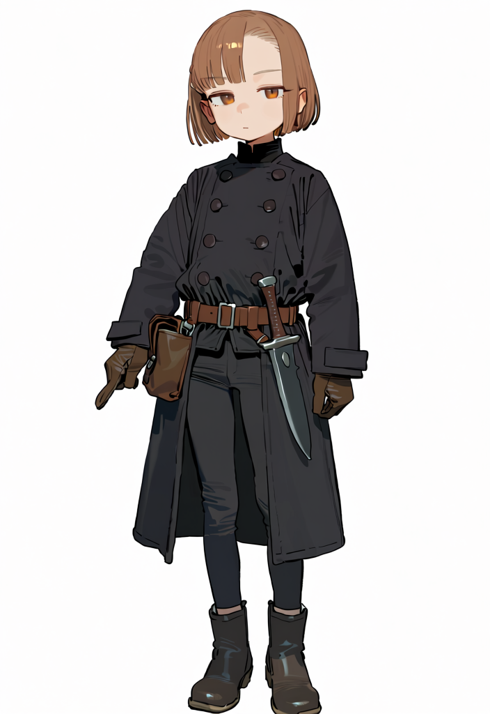
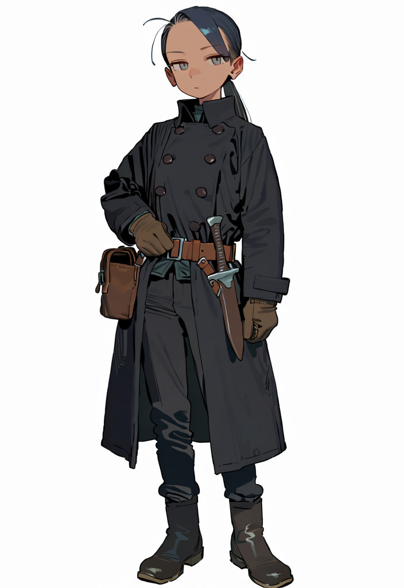
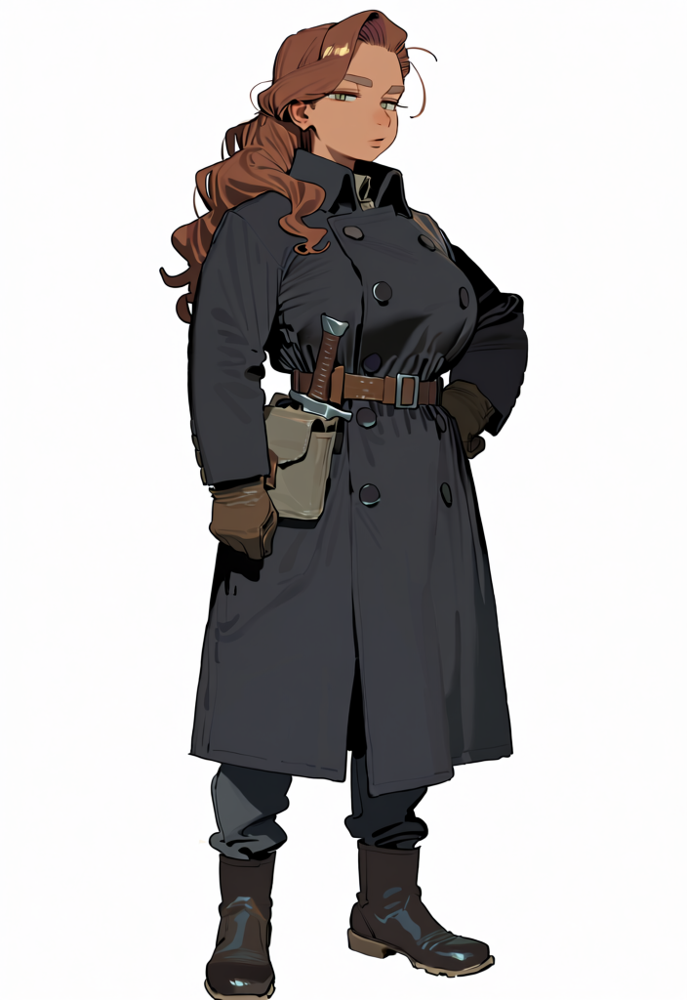

01 · 萝莉型猎人小兵Petite Hunter Recruit
浅棕短波波头，琥珀色眼睛，娇小骨架，黑色古典双排扣长大衣，腰侧皮包与佩刀。
查看完整原图（704×1024）按用户上传顺序；古典黑色制服；展示的是 GitHub 保存的未修改原始 PNG（白底 RGB，非透明图）。

浅棕短波波头，琥珀色眼睛，娇小骨架，黑色古典双排扣长大衣，腰侧皮包与佩刀。
查看完整原图（704×1024）
蓝黑色低马尾，冷静窄眼，修长骨架，黑色古典双排扣长大衣，腰侧皮包与佩刀。
查看完整原图（704×1024）
棕红色波浪长发，成熟面容，丰满成人身形，黑色古典双排扣长大衣，腰侧皮包与佩刀。
查看完整原图（704×1024）